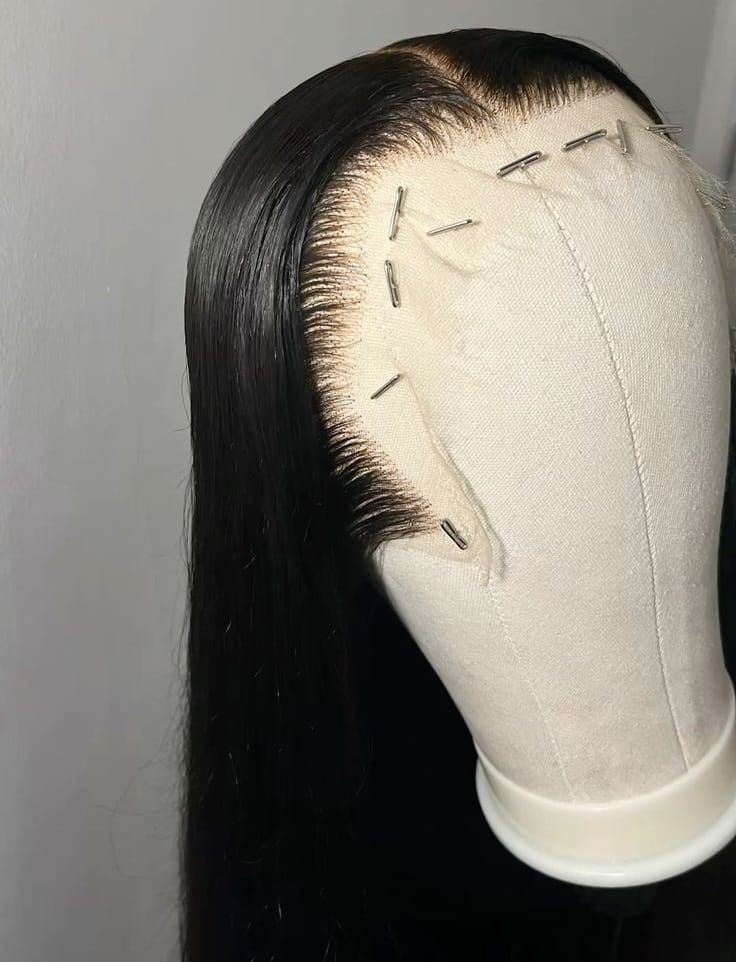
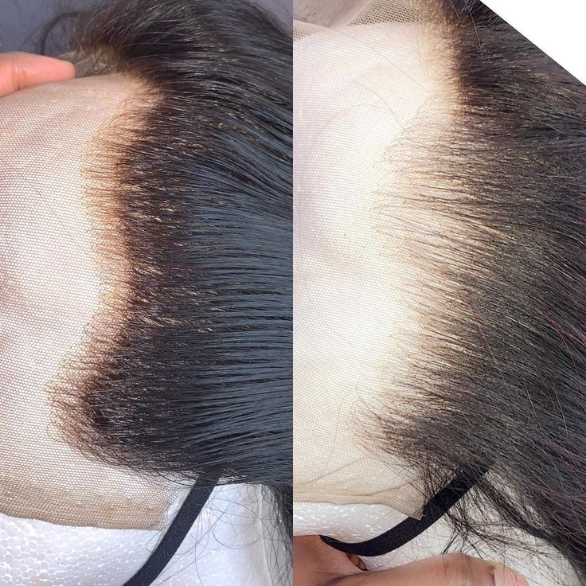

O que é Front-lace?
A Front Lace é um tipo de peruca ou aplique que possui uma faixa de tela (lace) na parte frontal da cabeça, geralmente indo de orelha a orelha. Essa tela é onde os fios de cabelo são implantados manualmente, fio por fio, criando um efeito muito mais natural na linha do cabelo. A principal característica da front lace é permitir que a pessoa faça penteados com a frente exposta, como risca no meio, risca lateral ou cabelo preso, mantendo a aparência de que os fios estão nascendo do próprio couro cabeludo. Ela é muito utilizada por quem deseja mudar o visual sem alterar o próprio cabelo, oferecendo praticidade e naturalidade.
Diferença entre Front Lace, Entrelace e Wig
Front Lace Possui lace apenas na parte frontal. Parte de trás geralmente é feita com uma base mais resistente. Permite penteados com a frente exposta. Mais natural na linha frontal do cabelo.
O entrelace não é uma peruca pronta. É uma técnica de costura feita no próprio cabelo da pessoa. O cabelo natural é trançado e o aplique é costurado nas tranças. Pode durar semanas, pois fica fixo na cabeça.
Wig significa peruca. Pode ser feita com ou sem lace. Normalmente é uma peça pronta, fácil de colocar e retirar. Nem sempre possui acabamento tão natural quanto a front lace (a menos que seja uma lace wig).

